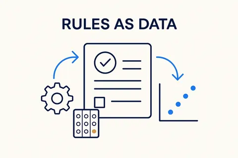
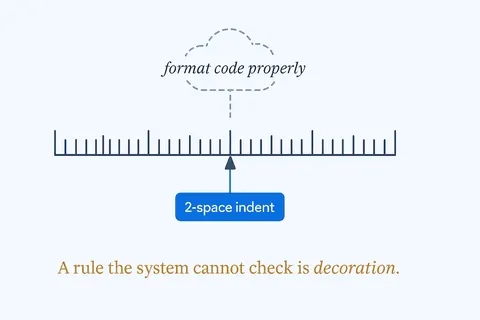
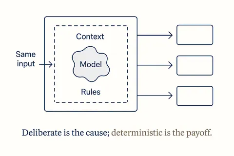
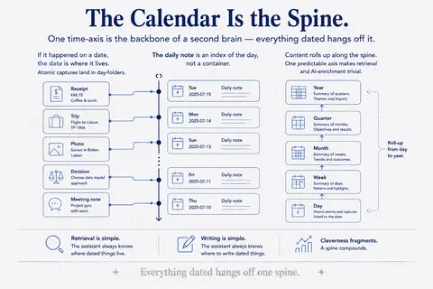
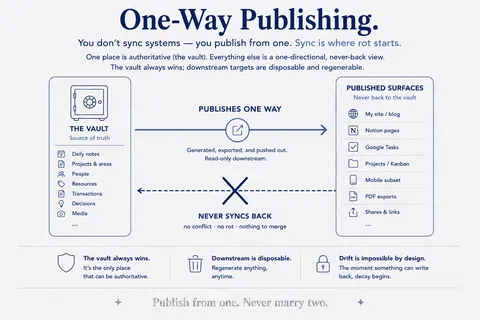

Data, rules and structure first
Most AI tools fail on the data, not on the AI. Clean data, written rules and one place for every fact are what make a tool work. 8 concepts; each opens its full page in its own library.
 Structure Beats MagicThe magic isn't in the model; it's in the structure you give it.Structure Beats Magic →
Structure Beats MagicThe magic isn't in the model; it's in the structure you give it.Structure Beats Magic →
Rules as DataConstraints and logic expressed as data, not buried in code — rules say what must hold, versioned and enforceable, so quality and governance travel with the model.Breakthrough Modeling →
Rules You Can Verify'2-space indent' is a rule; 'format code properly' is a wish. A rule the system can't check is decoration.Structure Beats Magic →
Deterministic by DesignDeliberate is whether the structure was chosen; deterministic is whether the output repeats. A toy is neither on the second try.Structure Beats Magic → Proven PatternsProven shapes you reach for instead of inventing — a pattern captures a repeatable solution (Data Vault, dimensional, temporal) so you compose from known-good parts.Breakthrough Modeling →
Proven PatternsProven shapes you reach for instead of inventing — a pattern captures a repeatable solution (Data Vault, dimensional, temporal) so you compose from known-good parts.Breakthrough Modeling → Deliberate SimplicityMake each part as plain as it can be without losing what matters — reuse only the fraction you actually need, and strip the rest.Breakthrough Modeling →
Deliberate SimplicityMake each part as plain as it can be without losing what matters — reuse only the fraction you actually need, and strip the rest.Breakthrough Modeling →
The Calendar Is the SpineOne time-axis is the backbone of a second brain — everything dated hangs off it.Structure Beats Magic →
One-Way PublishingYou don't sync systems — you publish from one. Sync is where rot starts.Structure Beats Magic →The neighbourhood
How this connects
Everything on this topic → (use cases, articles, resources)
Other categories: Design thinking and small experiments · From proof of concept to something you rely on · Vibe coding practices that hold · Build, buy or rent · Privacy and control · Building your own data models · Components and building blocks · The business OS